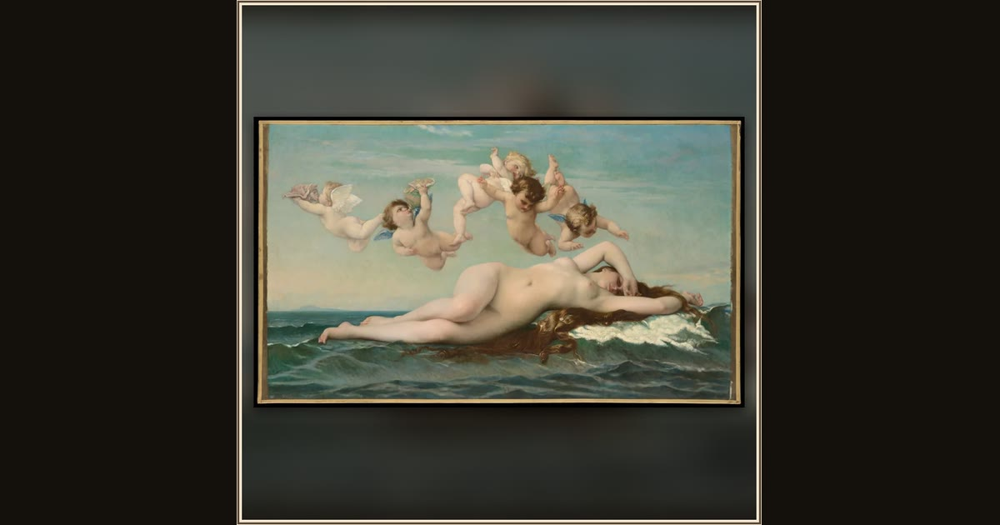

The Birth of Venus
Alexandre Cabanel · 1875 · met
Cabanel paints the newborn Venus lying on the waves with cupids above her, the goddess who grew in the white foam of the sea (190–194) Explore its place in Hesiod's Poems, Theogony, line 191.